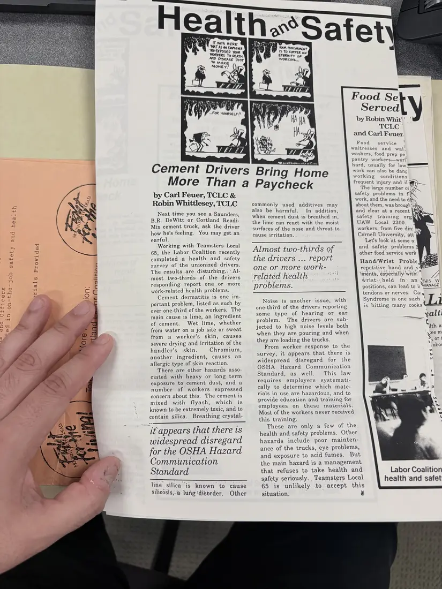

Newsletter, 1 page
“Cement Drivers Bring Home More Than a Paycheck”
[c. 1990–1991]Approximate date
A Health and Safety page article on a survey with Teamsters Local 65 of drivers for two Cortland-area cement companies, describing cement dermatitis, dust, and other hazards they face.
Clipped from a labor newspaper page; the Coalition's annual reports say The Working Press carried a regular Health and Safety page.
Download or cite this itemPages


(open zoom view)Read the page text (machine-read, mostly readable)
This text was generated automatically from the photograph and has not been corrected. The image is the authoritative record.
oe) 4H > a uu q toad + D1 pe 2 J SO we o ‘oy Cement Drivers Bring Home More Than a by Carl Feuer, TCLC & Robin Whittlesey, TCLC Next time you see a Saunders, B.R. DeWitt or Cortland Readi- Mix cement truck, ask the driver how he’s feeling. You may get an earful. Working with Teamsters. Local 65, the Labor Coalition recently completed a health and safety survey of the unionized drivers. The «results are disturbing.,‘ Al- most two-thirds -of. the drivers responding. report one or more work-related health problems. Cement dermatitis is one im- portant problem, listed as such by over one-third of the workers. The main cause is lime, an ingredient of cement. Wet lime, whether from water on a job site or sweat from a worker’s skin, causes severe drying and irritation of the handler’s skin. Chromium, another ingredient, causes an allergic type of skin reaction. There are other hazards asso- ciated with heavy or long term exposure to cement dust, and a number of workers expressed concern about this. The cement is mixed with flyash, which is known to be extremely toxic, and to contain silica. Breathing crystal- it appears that there is widespread disregard for the OSHA Hazard Communication Standard line” silica is known to cause silicosis, lung ‘disorder. Other by Robin Whit'' ' TCLE} and Carl Feuer. Food service waitresses and wai! washers, food prep pe pantry workers—worl hard, usually for bw == work can also be dang working conditions frequent injury and il #fFy}—_ The large number ot Re safety problems in fi work, and the need to apy about them, was brough’ and clear at a recent safety training org UAW Local 2300. workers, from five dini Cornell University, att’ Let’s look at some o and safety. problems 3 other food service work Hand/Wrist Proble | repetitive hand and vy \adents, especially: with” wrist: held in positions, can lead to ii SBI Mute [tous tre uHet ps Toet Paycheck commonly used additives may also be harmful. In addition, when cement dust is breathed in, the lime can react with the moist surfaces of the nose and throat to cause irritation. Almost two-thirds of the drivers ... report one or more work- related health problems. asl an: ZA THIS W ANAGE tendons or nerves. Caiy q Syndrome is one such . ] 1 is hitting many cooks A Noise is another issue, with one-third of the drivers reporting some type of hearing or ear yalt! problem. The drivers are sub- TES ¢ jected to high noise levels both ‘ith a when they are pouring and when yeem they are loading the trucks. he or i abo From worker response to the survey, it appears that there is widespread disregard for the OSHA Hazard Communication Standard, as well. This law requires employers systemati- cally to determine which mate- rials in use are hazardous, and to provide education and training for employees on these materials. Most of the workers never received this training. These are only a few of the health and safety problems. Other hazards include poor mainten- ance of the trucks, eye problems, and exposure to acid fumes. But the main hazard is a management that refuses to take health and safety seriously. Teamsters Local 65 is unlikely.to-accept this situation. & Labor Coalition health and safet
See something wrong, or recognize a person or event? Send a correction. If you hold rights in this item or think it should not be public, write to the same address.